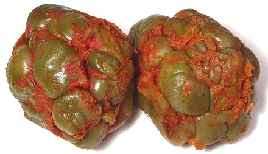

Szechwan Vegetable / Zha cai

[Zha cai (Sichuan - lit. "pressed vegetable"); Cha tsai, Tsa tsai
(Mandarin); Ja choi, Cha tsoi (Cantonese); Zasai (Japan);
Praeserviertes Gemuese (French); Brassica juncea subspecies
tatsai]
This is a salt fermented pickled vegetable made from the lower stems of a
mustard cultivar with strangely swollen stems. This variety appeared in
Sichuan provence and first became popular there, but it is now also used
in other cuisines of Southern China. It is very salty and needs to be
rinsed thoroughly before use. The photo specimens, purchased out of a tub
in a Los Angeles Asian market, were about 3 inches in
diameter and weighed 8-3/4 ounces each.
More on Asian Greens.
Buying:
Some of the larger Asian markets in Los Angeles
occasionally have this in bulk tubs, but generally you will find it put
up in 14 ounce red and yellow cans. Around here they are White Rabbit
brand, but others report My Ling brand. The cans may contain whole
stems or shredded, check the label. They are now also appearing in
vacuum bags.
Storage:
Fresh or from a can, it'll keep a couple weeks
in a sealed container in the refrigerator. Unopened cans will keep more
than a year.
Prep:
Slice and/or cut to the form you wish to use, then
rinse it thoroughly in warm water to reduce the salt somewhat. It'll still
be pretty salty.
Cooking:
This vegetable is used both raw and cooked in
various recipes, but most commonly in soups. It is used sparingly because
of its saltiness and distinctive flavor.
cb_szechz 100210 - www.clovegarden.com
©Andrew Grygus - agryg@clovegarden.com - Photos
on this page not otherwise credited © cg1
- Linking to and non-commercial use of this page permitted